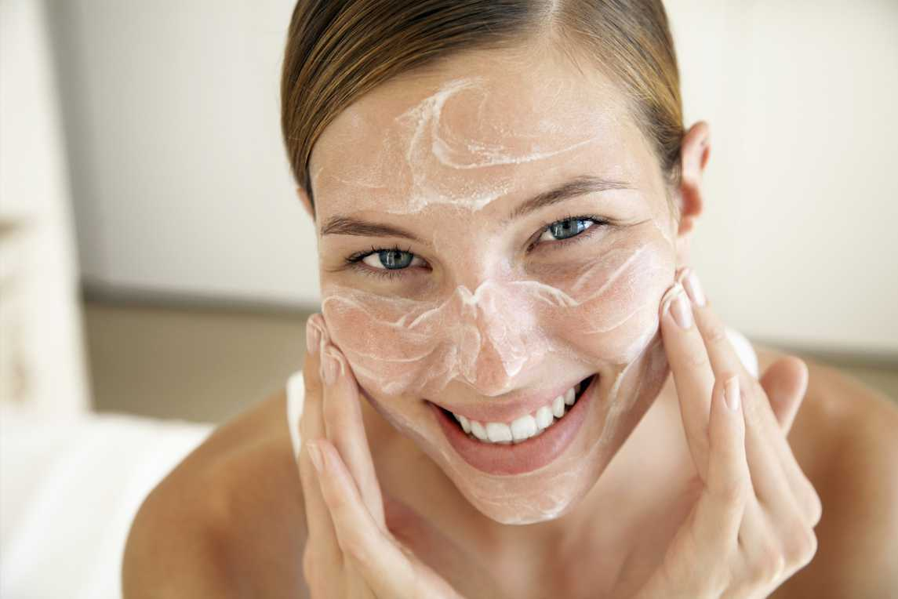

Состояние кожи

Про то, что за кожей нужно и важно ухаживать, казалось бы, знает каждый.
Ежедневный уход — это самая лучшая инвестиция в качество вашей кожи.
На ухоженном личике любой макияж смотрится в разы выигрышнее, и тона нужно меньше, и лежит он красивее, не подчеркивает шелушения и не исчезает через час.
Всегда до макияжа, да и после, начинайте ритуал ухода с очищения. Вы же не идете в душ в одежде. То же самое и с умыванием: до принятия «душа» необходимо снять «одежду» — макияж. Существуют специальные средства для снятия макияжа.
Затем приступаем к увлажнению глубоких слоев эпидермиса с помощью масел или сывороток, а затем наносим крем на все лицо и специальный крем на зону вокруг глаз.
Раз-два в неделю стоит делать специальные маски, пилинги или скрабы в зависимости от потребностей кожи. Именно благодаря такому уходу можно очистить кожу и подготовить ее к макияжу.
Проблемную кожу лучше вообще не маскировать по макияжем, поры будут забиваться и состяние кожи станет еще хуже.
Всегда до макияжа, да и после, начинайте ритуал ухода с очищения. Вы же не идете в душ в одежде. То же самое и с умыванием: до принятия «душа» необходимо снять «одежду» — макияж. Существуют специальные средства для снятия макияжа.
Затем приступаем к увлажнению глубоких слоев эпидермиса с помощью масел или сывороток, а затем наносим крем на все лицо и специальный крем на зону вокруг глаз.
Раз-два в неделю стоит делать специальные маски, пилинги или скрабы в зависимости от потребностей кожи. Именно благодаря такому уходу можно очистить кожу и подготовить ее к макияжу.
Проблемную кожу лучше вообще не маскировать по макияжем, поры будут забиваться и состяние кожи станет еще хуже.